인시던트 생성 제한 규칙
“미종료 인시던트 생성 제한”에서 걸러지지 않은 경고에 대해 서비스에서 설정한 규칙을 적용하여 생성 제한 합니다.
단, 종료되지 않은 인시던트가 존재하여야 합니다.
또한 사용자는 사용자의 판단에 따라 경고가 생성되지 않은 상태에서도 수동으로 인시던트를 생성해 장애 대응을 진행할 수 있습니다. (추후예정)
사용자는 경고 규칙에 의해 인시던트가 생성되지 않은 경고를 선택해 인시던트로 생성할 수 있습니다.(추후예정)
사용자는 경고 이 생성되지 않은 상태에서도 수동으로 인시던트를 생성할 수 있습니다.(추후예정)
사용자는 이미 인시던트가 생성된 경고를 선택해 다른 인시던트에 연결할 수 있습니다.(추후예정)
경고, 인시던트 관계
위 내용을 종합했을 때, 경고와 인시던트는 아래의 관계를 가질 수 있습니다.
경고 기준
인시던트 생성
경고 : 생성된 인시던트
[ 1 : 1 ]
참조 경고
경고 : 참조 경고
[ 1 : N ] (추후예정)
참조 인시던트
경고 : 참조 인시던트
[ 1 : N ] (추후예정)
인시던트 기준
생성기준 경고
인시던트 : 경고
[ 1 : 1 ]
인시던트 병합
인시던트 : 병합 인시던트
[ 1 : N ] (추후예정)
참조 인시던트
인시던트 : 참조 인시던트
[ 1 : N ] (추후예정)
참조 경고
인시던트 : 참조 경고
[ 1 : N ] (추후예정)
경고는 다음과 같은 인시던트 생성 결과를 가질 수 있습니다.
인시던트 생성
생성안됨(생성 제한 규칙)
생성안됨(유지보수 일정)
생성안됨(인시던트 미종료)
인시던트
접속 경로: 인시던트 > 인시던트
인시던트 메뉴를 통해 생성된 인시던트들을 목록으로 확인할 수 있으며, 인시던트 별 상세 내용을 확인하고 처리 상태를 기록할 수 있습니다.
또한 기간, 키워드를 설정해 특정 인시던트를 검색할 수 있습니다.
화면구성
인시던트 메뉴는 아래와 이미지와 같이 크게 두 영역으로 구분됩니다.
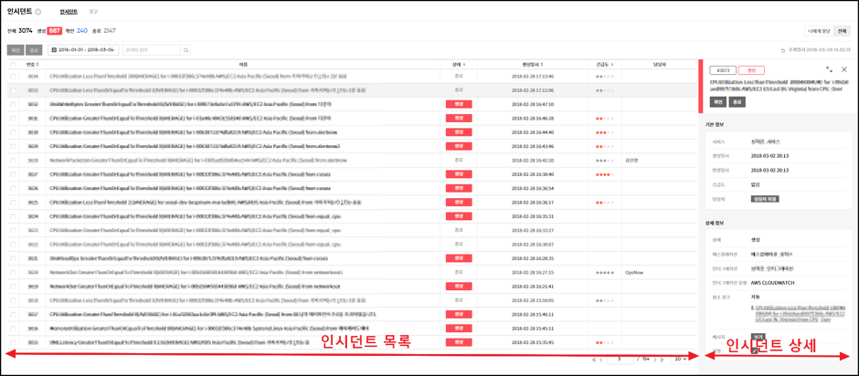
인시던트 목록
기 발생한 인시던트의 목록으로 확인 및 검색할 수 있습니다. 목록화면에서 인시던트 선택 시, 선택한 항목의 정보가 상세 영역에 표시됩니다. 목록화면에서는 아래의 정보를 확인할 수 있습니다.
항목
설명
번호
인시던트의 고유식별번호를 표시합니다.
이름
인시던트의 제목을 표시합니다.
상태
인시던트의 상태를 표시합니다.
인시던트는 아래의 상태 값을 가집니다.
생성
확인
종료
생성일시
인시던트의 생성 날짜 및 시간을 표시합니다.
변경일시
인시던트의 의 최종 수정 날짜 및 시간을 표시합니다.
긴급도
인시던트의 긴급도를 표시합니다.
서비스
인시던트가 발생한 서비스 이름을 표시합니다.
담당자
인시던트의 담당자로 지정된 사용자 이름을 표시합니다.
인시던트 상세
인시던트 목록에서 선택한 항목의 상세 정보를 확인할 수 있습니다. 해당 영역은 사용자의 필요에 따라 확장해 큰 화면으로 확인할 수도 있습니다. 인시던트 상세화면에서는 아래의 정보를 확인할 수 있습니다.
기본정보
항목
설명
서비스
인시던트가 발생한 서비스 이름을 표시합니다.
생성일시
인시던트의 생성 날짜 및 시간을 표시합니다.
긴급도
인시던트의 긴급도를 표시합니다.
담당자
인시던트의 담당자를 표시합니다.
상세정보
항목
설명
상태
인시던트의 상태를 표시합니다.
인시던트는 아래의 상태 값을 가집니다.
생성
확인
종료
에스컬레이션
인시던트에 설정된 에스컬레이션 규칙을 표시합니다.
인티그레이션
인시던트 를 발생시킨 인티그레이션 명을 표시합니다.
인티그레이션 유형
인시던트 를 발생시킨 인티그레이션 유형을 표시합니다.
참조 경고
인시던트 를 발생시킨 경고를 표시합니다.
메세지
경고 발생 시 첨부된 메시지를 표시합니다.
설명
인시던트 의 설명을 표시합니다. 설명을 직접 입력할 수 있습니다.
인시던트 상태
인시던트는 아래의 세가지 상태 값을 가지며, 상태에 따라 제목 영역을 다른 색상으로 표시합니다.
생성
새롭게 인시던트로 생성되어 아직 처리 전인 상태를 의미합니다.
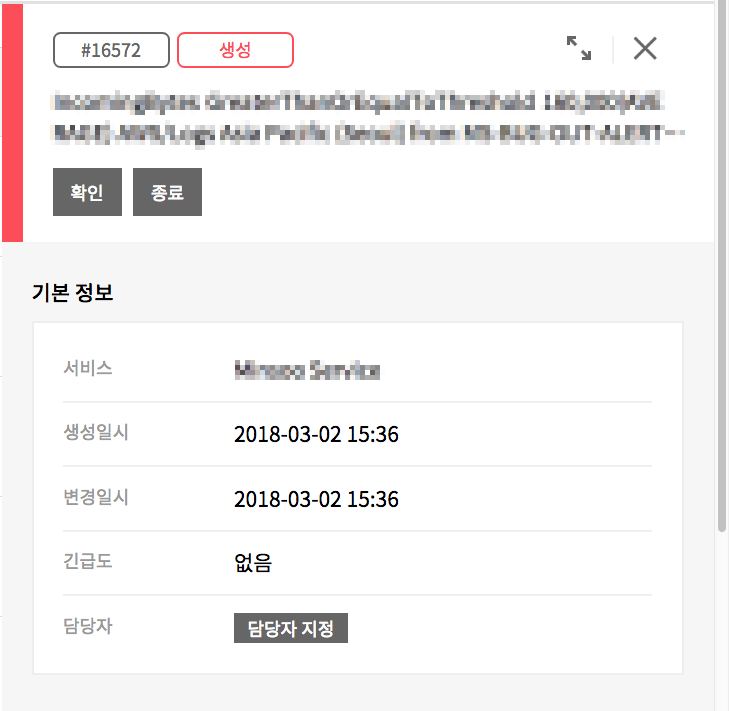생성 상태
확인
장애 사실을 인지하고 담당자가 처리 중인 상태를 의미합니다.
확인 상태
종료
장애 처리가 완료되어 종결된 상태를 의미합니다.
종료 상태
인시던트 검색
사용자는 인시던트 목록에서 인시던트를 기간/키워드 조건을 설정해 인시던트를 검색할 수 있습니다. 검색 결과는 인시던트 목록에 바로 표시됩니다.
기간 검색
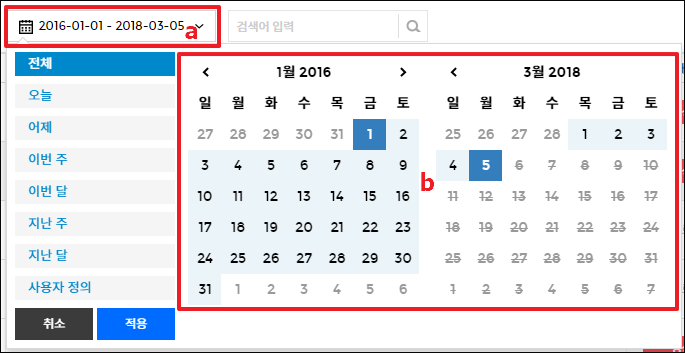
기간 선택 Preset
사용자는 인시던트 목록에서 기간/키워드 조건을 설정해서 검색할 수 있습니다. 검색 결과는 목록에 바로 표시됩니다.
Preset
기간
전체
인시던트가 발생한 전체 기간을 검색합니다.
오늘
현재 날짜를 선택한다.
어제
어제의 날짜를 선택한다.
이번 주
현재 시간을 기준으로 이번 주를 선택한다.
이번 달
현재 시간을 기준으로 해당 월을 선택한다.
지난 주
현재 시간을 기준으로 지난 주를 선택한다
지난 달
현재 시간을 기준으로 지난 달을 선택한다.
기간 선택
사용자는 검색 시작/종료일 및 시간을 선택할 수 있습니다.
기간 선택 시 선택한 기간 내의 인시던트가 목록에 표시됩니다.
또한 사용자는 좌/우 화살표를 선택해 현재 설정된 날짜를 기준으로 이전/이후 주기를 설정할 수 있습니다.
키워드 검색
사용자는 키워드를 입력해 입력한 키워드와 일치하는 인시던트를 검색할 수 있습니다. 선택한 기간의 인시던트 중 입력한 키워드와 일치하는 항목을 검색 결과로 표시합니다.
상태 필터
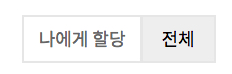상태 필터(우측상단)
목록 내 인시던트 중, 담당자가 현재 로그인한 사용자인 인시던트만 필터링해 확인할 수 있습니다.
나에게 할당
인시던트 목록에서 담당자가 현재 로그인한 사용자인 인시던트만 표시합니다.
전체
전체 인시던트를 표시합니다.
인시던트 조작
목록 내 인시던트에 대해 아래의 작업들을 수행할 수 있습니다.
상태 변경
인시던트의 상태를 변경할 수 있습니다. 개별 인시던트의 상태를 변경할 수 있으며, 복수의 인시던트를 선택해 상태를 일괄 변경할 수 있습니다.
인시던트 상태 변경
인시던트 상세 화면에서 이름 하단의 버튼으로, 상태를 변경 할 수 있습니다.
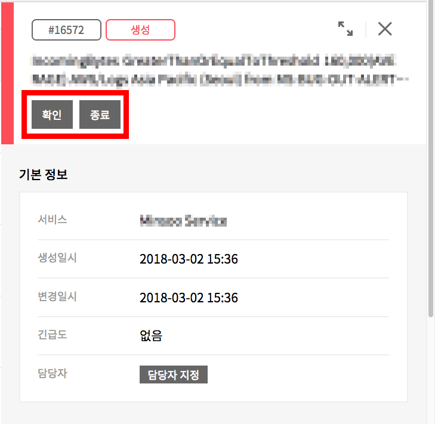
생성 상태인 인시던트는 확인, 종료 상태로 변경할 수 있습니다.
확인 상태의 인시던트는 종료 상태로 변경할 수 있습니다.
종료 상태의 인시던트는 상태를 변경할 수 없습니다.
복수 인시던트 상태 일괄 변경
인시던트 목록에서 상태를 변경할 인시던트를 선택 후 상태를 일괄 변경할 수 있습니다.
복수 인시던트 선택 후 목록 좌측 상단의 [확인][종료] 버튼을 클릭해 상태를 변경할 수 있습니다.
담당자 지정 및 변경
인시던트 별로 담당자를 지정하거나 변경할 수 있습니다. 인시던트 상세 화면의 [담당자 지정] 버튼 클릭 시 담당자를 지정할 수 있는 팝업이 표시됩니다.
담당자를 지정할 인시던트 선택
담당자 항목에는 현재 지정된 담당자 의 이름이 표시되며, [담당자] 버튼 클릭 시 담당자를 변경할 수 있는 팝업이 표시됩니다.
담당자 선택
담당자 지정 팝업을 통해 담당자를 검색 후 지정할 수 있습니다.
하나의 인시던트에 대해 복수의 담당자를 지정할 수 없습니다.
코멘트 작성
인시던트에 대한 댓글을 작성할 수 있습니다.
인시던트 상세 화면의 “전체화면”으로 이동
인시던트 상세 화면에서 활동 이력 탭의 “전체” 또는 “댓글”에서 입력
댓글 입력 후 [작성] 버튼 클릭
입력된 댓글 확인
제목 변경
사용자의 필요에 따라 각 인시던트의 제목을 변경할 수 있습니다.
전체 화면의 제목 영역에서 [수정] 버튼 클릭
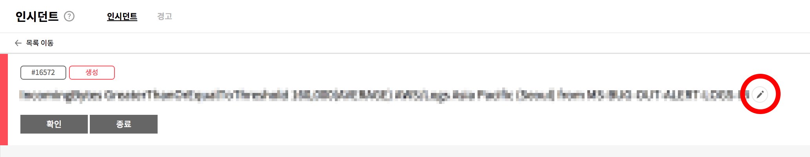
제목 수정 후, [확인] 버튼 클릭
변경된 제목 확인
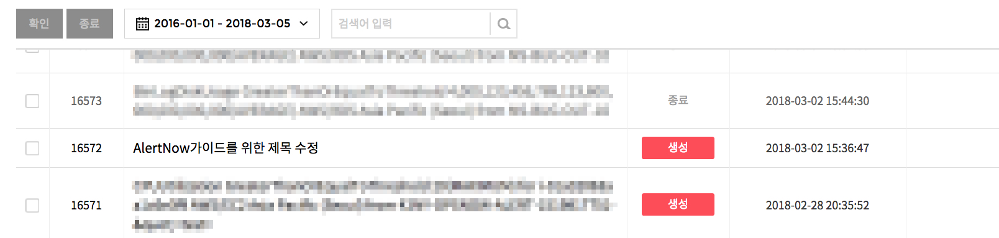
연관 경고 확인
각 인시던트의 참조 경고를 확인할 수 있으며, 각 경고의 상세 화면으로 이동할 수 있습니다.
인시던트 참조 경고 확인
참조 경고 클릭해 경고 상세 정보 확인
경고
접속 경로: 인시던트 > 경고
경고 메뉴를 통해 경고 항목들을 목록으로 확인할 수 있으며, 상세 내용을 확인할 수 있습니다.
또한 기간, 키워드를 설정해 특정 경고를 검색할 수 있습니다.
화면구성
경고 메뉴는 아래와 이미지와 같이 크게 두 영역으로 구분됩니다.
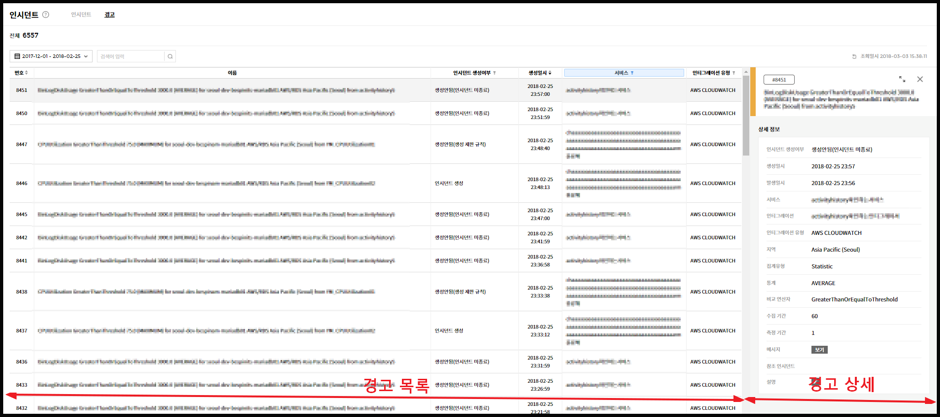경고 구성
경고 목록
기 발생한 경고들을 목록으로 확인할 수 있으며, 발생한 항목들을 검색할 수 있습니다.
경고 목록에서 항목 선택 시, 선택한 항목의 정보가 상세 영역에 표시됩니다.
경고 목록에서는 아래의 정보를 확인할 수 있습니다.
항목
설명
번호
경고의 고유식별번호를 표시합니다.
이름
경고의 제목을 표시합니다.
인시던트 생성 여부
해당 경고의 인시던트 생성 유무를 표시합니다.
생성 일시
경고의 생성 날짜 및 시간을 표시합니다.
서비스
경고가 발생한 서비스 명을 표시합니다.
인티그레이션 유형
경고이 발생한 서비스의 인티그레이션 유형을 표시합니다.
경고 상세
경고 항목에서 선택한 경고의 상세 정보를 확인할 수 있습니다. 해당 영역은 사용자의 필요에 따라 확장해 큰 화면으로 확인할 수도 있습니다. 경고 상세 화면에서는 아래의 정보를 확인할 수 있습니다.
항목
설명
인시던트 생성여부
인시던트 생성 규칙에 따라 인시던트 생성 결과를 표시합니다.
생성일시
경고의 생성 날짜 및 시간을 표시합니다.
발생일시
경고의 발생 날짜 및 시간을 표시합니다.
서비스
경고가 발생한 서비스 명을 표시합니다.
인티그레이션
경고의 인티그레이션 을 표시합니다.
인티그레이션 유형
경고가 발생한 서비스의 인티그레이션 유형을 표시합니다.
지역
경고가 발생한 지역을 표시합니다.
집계유형
경보의 집계 유형을 표시합니다.
통계
경보의 통계 설정 값을 표시합니다.
비교연산자
경보의 임계치 설정 비교 연산자를 표시합니다.
수집 기간
Metric에 설정된 경보 수집 기준 기간을 표시합니다.
측정 기간
Metric에 설정된 경보 측정을 표시합니다.
메시지
경고의 상세 메시지를 확인할 수 있습니다.
참조
인시던트 경고와 연결된 인시던트를 표시한다.
설명
경고의 상세 설명을 확인할 수 있습니다.
경고 검색
사용자는 경고 목록에서 기간/키워드 조건을 설정해 경고를 검색할 수 있습니다.
검색 결과는 경고 목록에 바로 표시됩니다.
기간 검색
검색 조건
기간 선택 Preset
사용자가 선택 가능한 기간을 Preset 형태로 제공합니다. 사용자는 아래의 기간 Preset 을 선택할 수 있으며, 선택 시 기간 선택 영역에 선택된 기간이 표시됩니다.
Preset
기간
전체
경고가 발생한 전체 기간을 검색합니다.
오늘
현재 날짜를 선택한다.
어제
어제의 날짜를 선택한다.
이번 주
현재 시간을 기준으로 이번 주를 선택한다.
이번 달
현재 시간을 기준으로 해당 월을 선택한다.
지난 주
현재 시간을 기준으로 지난 주를 선택한다
지난 달
현재 시간을 기준으로 지난 달을 선택한다.
기간 선택
사용자는 검색 시작/종료일 및 시간을 선택할 수 있습니다.
기간 선택 시 선택한 기간 내의 경고가 경고 List에 표시됩니다.
또한 사용자는 좌/우 화살표를 선택해 현재 설정된 날짜를 기준으로 이전/이후 주기를 설정할 수 있습니다.
키워드 검색
사용자는 키워드를 입력해 입력한 키워드와 일치하는 경고를 검색할 수 있습니다. 선택한 기간의 경고 중 입력한 키워드와 일치하는 인시던트를 검색 결과로 표시합니다.
경고 조작
목록 내 경고에 대해 아래의 작업을 수행할 수 있습니다.
메시지 확인
발생한 경고에 대한 상세 메시지를 확인할 수 있습니다.
경고 상세 화면에서 [메시지]>[보기] 버튼을 클릭합니다.
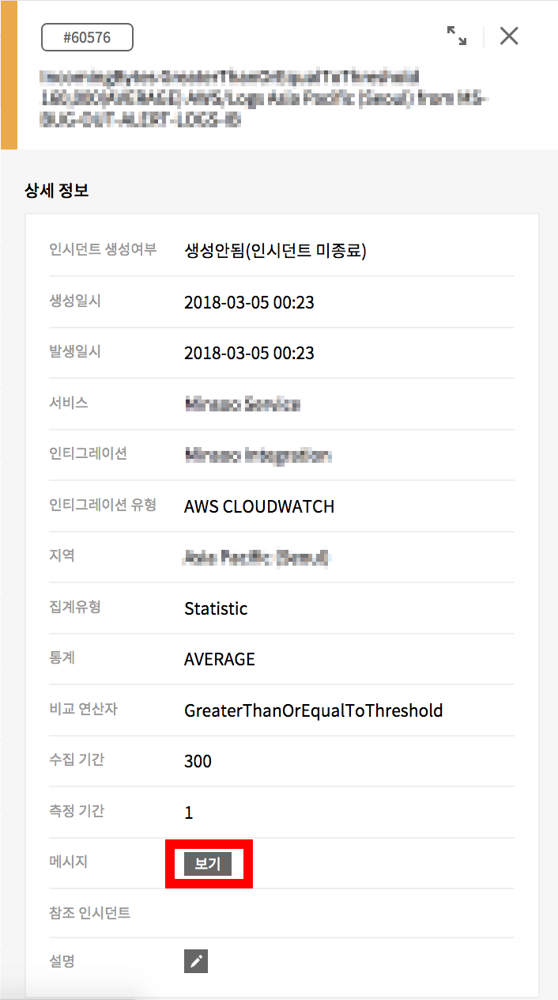
새 탭으로 상세 메세지가 표시됩니다.
설명 입력
발생한 경고에 대해 상세 설명을 입력할 수 있습니다.
경고 상세 화면에서 [수정] 버튼을 클릭합니다.
설명 입력 후 [저장] 버튼을 클릭합니다.
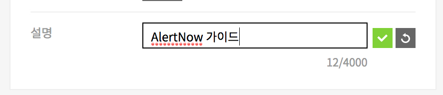
입력된 Description 을 확인합니다.
참조 인시던트 보기
선택한 경고를 통해 생성된 인시던트 들을 확인할 수 있으며, 각 인시던트 의 상세 화면으로 이동할 수 있습니다.
참조 인시던트 확인
연관 인시던트 클릭해 인시던트 상세 정보 확인
서비스
고객이 설정한 서비스 단위로 인시던트를 상태를 관리합니다.
서비스는 인티그레이션에서 발생하는 인시던트를 관리하기 위한 단위로, 실제로 사용자가 관리하는 서비스나 애플리케이션이 될 수 있고 그 외에도 사용자의 편의에 따라 자유롭게 활용할 수 있습니다.
인티그레이션에 설정된 라우팅 룰에 따라 서비스로 분기 되어 인시던트를 관리 할 수 있습니다.
서비스 생성을 위한 Use Case는 다음과 같습니다.
Case
설명
Use Case 1)
“서비스” 메뉴에서 생성
서비스 메뉴에서 오른쪽 상위에 있는 “서비스 생성” 버튼을 클릭 합니다.
서비스를 생성 합니다.
이 경우, 서비스 이름과 에스컬레이션 규칙 설정으로 생성 할 수 있습니다.
Use Case 2)
“인티그레이션” 메뉴 상에
인티그레이션 생성시에 생성
인티그레이션 메뉴에서 오른쪽 상위에 있는 “인티그레이션 생성” 버튼을 클릭 합니다.
서비스를 선택 합니다.
- 인티그레이션 이름
- 인티그레이션 유형
- 서비스 > 신규 서비스 생성
Use Case 1.서비스 메뉴에서 생성
1단계 : 서비스 메뉴 선택
서비스 메뉴를 클릭 합니다.
2단계 : 신규 서비스 생성
“서비스 생성” 버튼을 클릭 합니다.
3단계 : 서비스를 생성
서비스 생성을 위한 입력 항목은 다음과 같습니다.
항목
설명
비고
서비스 이름
고객이 생성하고자 하는 서비스 이름을 임의로 입력 합니다..
필수 입력 사항
에스컬레이션 규칙
에스컬레이션 기본 규칙
생성된 에스컬레이션 규칙이 없는 경우, “에스컬레이션 기본 규칙”이 생성됩니다.
사용자 설정 조건 추가
사용자가 우선순위를 결정하여, 조건에 따라 에스컬레이션을 선택 할 수 있습니다.
(선택 시 사용자가 설정한 조건의 규칙을 기본규칙보다 우선적으로 적용 됩니다.)
필수 입력 사항
인시던트 생성 규칙
인시던트 생성 제한 규칙
조건 항목(Alert Summary, Alert Metric Name)가
연속해서 발생 할 경우, 초/분/시/일을 설정하여, 인시던트 중복 생성을 방지 할 수 있습니다.
인시던트 긴급도 규칙
인시던트의 긴급도를 설정 할 수 있습니다.
옵션 입력 사항
에스컬레이션 규칙이 없는 경우 자동으로 “에스컬레이션 기본 규칙”이 생성됩니다. (서비스 생성자가 기본 수신자로 설정이 됩니다.)
에스컬레이션이 있는 경우 “저장”을 클릭 합니다.
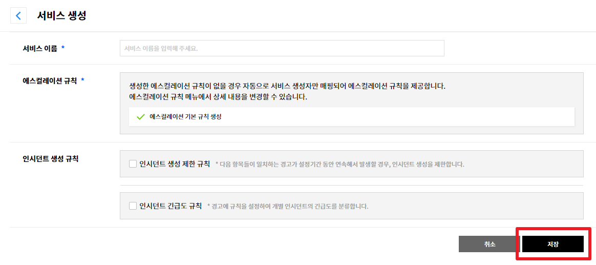
4단계 : 생성된 서비스를 선택
생성된 서비스를 클릭하면 다음과 같은 화면으로 이동 합니다.
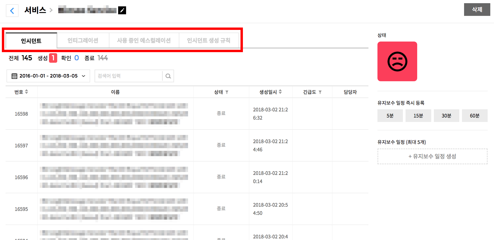
각 탭에 대한 내용은 다음과 같습니다.
항목
설명
비고
인시던트
기간 및 검색 조건에 따른 인시던트 상태를 확인 할 수 있습니다.
인티그레이션
해당 서비스의 인티그레이션 정보를 확인 할 수 있습니다
사용중인 에스컬레이션
해당 서비스의 에스컬레이션 정보를 확인 할 수 있습니다.
수정 가능
인시던트 생성 규칙
해당 서비스의 인시던트 생성 룰을 확인 할 수 있습니다.
수정 가능
5단계 : 생성된 서비스에 인티그레이션 설정
다음 안내 Use Case 2.를 참조 하시기 바랍니다.
Use Case 2. 인티그레이션 생성 시에 생성
1단계 : 인티그레이션 메뉴 선택
인티그레이션 메뉴를 클릭 합니다.
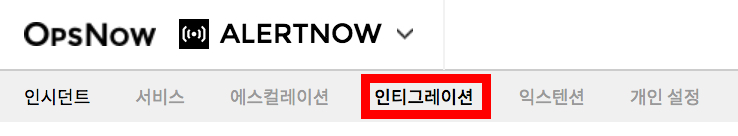
2단계 : 신규 인티그레이션 생성
“인티그레이션 생성” 버튼을 클릭 합니다.
3단계 : AWS Cloud Watch 선택
“새 인티그레이선 추가” 버튼을 클릭합니다.
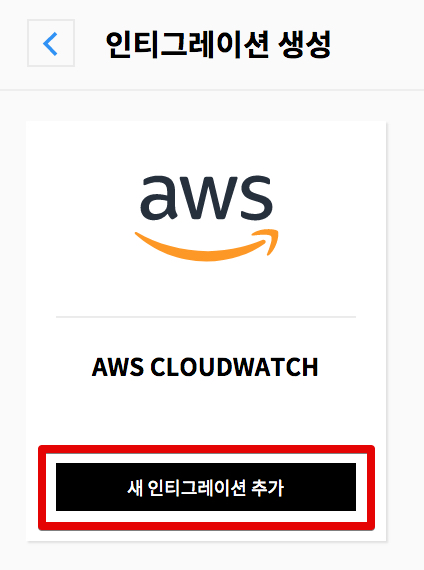
4단계 : 인티그레이션 설정
인티그레이션 설정을 위한 입력 항목은 다음과 같습니다.
서비스는 여러 인티그레이션을 그룹화 하여 고객이 관리하고자 하는 고객 향의 서비스로 지정하여 인시던트를 관리 할 수 있습니다.
항목
설명
비고
인티그레이션 이름
고객이 인티그레이션 이름을 설정할 수 있습니다.
필수 입력 사항
인티그레이션 유형
기 선택한 대상의 로고가 보입니다.
입력 및 수정 불가 사항
서비스
신규 서비스 생성
인티그레이션 생성 시, 서비스도 동시에 생성을 합니다.
서비스 선택
인티그레이션 생성 시, 기존에 있는 서비스를 매핑 합니다.
필수 선택 사항
중복 선택 불가
“신규 서비스 생성” 화면은 다음과 같습니다.
항목
설명
비고
서비스 이름
고객이 생성하고자 하는 서비스 이름을 임의로 입력 합니다.
필수 입력 사항
에스컬레이션 규칙
에스컬레이션 기본 규칙
에스컬레이션 기본 규칙을 설정합니다.
사용자 설정 조건 추가
사용자가 우선순위를 결정하여, 조건에 따라 에스컬레이션을 선택 할 수 있습니다.
(선택 시 사용자가 설정한 조건의 규칙을 기본규칙보다 우선적으로 적용 됩니다.)
필수 입력 사항
인시던트 생성 규칙
인시던트 생성 제한 규칙
조건 항목(Alert Summary, Alert Metric Name)가 연속해서 발생 할 경우,
초/분/시/일을 설정하여, 인시던트 중복 생성을 방지 할 수 있습니다.
인시던트 긴급도 규칙
인시던트의 긴급도를 설정 할 수 있습니다.
옵션 입력 사항
5단계 : 생성 인티그레이션, 서비스 저장
“인티그레이션 이름”을 입력하고, 사용자의 설정에 따른 서비스를 생성, 혹은 선택한 후에 우측 하단의 “저장” 버튼을 클릭 합니다
에스컬레이션
인시던트 발생 시 단계별로 이를 처리할 담당자 및 담당자가 처리해야 할 Action과 시간(Timeout)을 설정하여 Rule로 관리 할 수 있습니다.
에스컬레이션 정책 생성을 위한 Use Case는 다음과 같습니다.
Case
설명
Use Case 1.
“에스컬레이션” 메뉴에서 생성
에스컬레이션 메뉴에서 오른쪽 상위에 있는 “에스컬레이션 생성” 버튼을 클릭합니다.
에스컬레이션 정책을 생성 합니다.
Use case 2.
“서비스” 생성시, 에스컬레이션 기본 규칙 생성
서비스 생성의 경우, 기존에 생성된 에스컬레이션 규칙이 없다면 “에스컬레이션 기본 규칙”이 생성됩니다.
Use case 3.
“인티그레이션”, “서비스” 생성을 동시에 할 경우,
기존에 생성된 에스컬레이션 규칙이 없는 경우
“인티그레이션”, “서비스” 생성을 동시에 할 경우, 기존에 생성된 에스컬레이션 규칙이 없다면 “에스컬레이션 기본 규칙”이 생성됩니다
Use Case 1. 에스컬레이션 메뉴에서 생성
1단계 : 에스컬레이션 메뉴 선택
에스컬레이션 메뉴를 클릭 합니다.
2단계 : 신규 에스컬레이션 생성
“에스컬레이션 생성” 버튼을 클릭 합니다.
3단계 : 에스컬레이션 정책 생성
에스컬레이션 설정을 위한 입력 항목은 다음과 같습니다
항목
설명
비고
이름
고객이 에스컬레이션 정책 이름을 설정할 수 있습니다.
필수 입력 사항
설명
해당 에스컬레이션에 대한 설명을 추가 합니다.
옵션 사항
규칙 설정
If the incidents is not “acknowledged / closed” It will escalate to next step.
“확인” 상태가 아닌 경우,
“종료” 상태가 아닌 경우,
에스컬레이션 정책을 설정 합니다.
수신자 설정
같은 회사 소속 사용자들 중에 선택 할 수 있습니다. 수신자를 여러 명 선택 할 수 있습니다.
정책 선택 시, 필수 설정 사항
시간(단위:분)
알림을 전달할 시간 주기를 분 단위로 설정 할 수 있습니다.
정책 선택 시, 필수 설정 사항
조치
수신자에게 시간(분 단위) 주기로 설정하여 알림을 받은 이후,
조치를 “escalation to next step” / “repeat this step” 중 선택 할 수 있습니다.
escalation to next step : 다음 에스컬레이션단계로 수행 합니다.
repeat this step : 현재 단계를 반복 합니다. 반복 주기를 시간 단위로 설정할 수 있습니다.
정책 선택 시, 필수 설정 사항
추가 항목 설정
에스컬레이션이 조치 및 추가 에스컬레이션 단계까지 승급 되었는데도
아무런 조치가 취해지지 않는 경우, 다음의 옵션을 설정할 수 있습니다.
If no one acknowledged, repeat this policy (1) Times
> 에스컬레이션 1단계부터 마지막 단계 까지 (1)회 다시 시작 합니다.
> (1) 횟수의 최대 숫자는 9 입니다.
If no one acknowledged, there will be (1) more attempts once every (2) minutes
> 모든 수신자를 대상으로 (2)분 간격으로 (1)회 통지합니다.
> (1) 횟수의 최대 숫자는 9 입니다.
> (2)분의 시간 간격을 설정 할 수 있습니다.
옵션 설정 항목
4단계 : 생성 에스컬레이션 저장
에스컬레이션 설정을 아래와 같이 저장 합니다.
Use Case 2. “서비스” 생성시 에스컬레이션 기본 규칙 생성
1단계 : 서비스 메뉴 선택
서비스 메뉴를 클릭 합니다.
2단계 : 신규 서비스 생성
“서비스 생성” 버튼을 클릭 합니다.
3단계 : 에스컬레이션 기본 규칙 생성
에스컬레이션 규칙이 없는 경우 자동으로 “에스컬레이션 기본 규칙”이 생성됩니다.
(서비스 생성자가 기본 수신자로 설정이 됩니다.)
※ 나머지 서비스 생성은 서비스 가이드 항목을 참고 해 주세요
Use Case 3. “인티그레이션”, “서비스” 생성을 동시에 할 경우
1단계 : 인티그레이션 메뉴 선택
인티그레이션 메뉴를 클릭 합니다.
2단계 : 신규 인티그레이션 생성
“인티그레이션 생성” 버튼을 클릭 합니다.
3단계 : AWS Cloud Watch 선택
“새 인티그레이션 추가” 버튼을 클릭합니다.
4단계 : 인티그레이션 설정
인티그레이션, 서비스 생성을 동시에 할 경우, 기존에 생성된 에스컬레이션 규칙이 없다면 “에스컬레이션 기본 규칙”이 생성됩니다. (서비스 생성자가 기본 수신자로 설정이 됩니다.)
※ 나머지 인티그레이션 생성은 인티그레이션 가이드 항목을 참고 해 주세요.
인티그레이션
사용자는 AlertNow가 제공하는 인티그레이션 목록 중 자신이 사용 중인 툴이나 서비스를 선택하여인티그레이션 설정을 함으로써 해당 툴에서 발생 하는 알림을 AlertNow로 전달 하고 관리할 수 있습니다.
Note : AlertNow에서 제공하는 인티그레이션 자원은 다음과 같습니다.
AWS CLOUD WATCH : EC2, RDS, EBS, Redshift, ELB, S3
(항목 추가 시, UPDATE될 예정)
인티그레이션 설정
인티그레이션 설정 방법은 다음과 같습니다.
1단계 : 인티그레이션 메뉴 선택
인티그레이션 메뉴를 클릭 합니다.
2단계 : 신규 인티그레이션 생성
“인티그레이션 생성” 버튼을 클릭 합니다.
3단계 : AWS Cloud Watch 선택
“새 인티그레이션 추가” 버튼을 클릭합니다.
4단계 : 인티그레이션 설정
인티그레이션 설정을 위한 입력 항목은 다음과 같습니다.
서비스는 여러 인티그레이션을 그룹화 하여 고객이 관리하고자 하는 고객 향의 서비스로 지정하여 인시던트를 관리 할 수 있습니다.
항목
설명
비고
인티그레이션 이름
고객이 인티그레이션 이름을 설정할 수 있습니다
필수 입력 사항
인티그레이션 유형
선택한 대상의 로고가 보입니다.
입력 및 수정 불가 사항
서비스
신규 서비스 생성
인티그레이션 생성 시, 서비스도 동시에 생성을 합니다.
서비스 선택
인티그레이션 생성 시, 기존에 있는 서비스를 매핑합니다.
필수 선택 사항
중복 선택 불가
신규 서비스화면은 다음과 같습니다.
항목
설명
비고
서비스 이름
고객이 생성하고자 하는 서비스 이름을 임의로 입력 합니다..
필수 입력 사항
에스컬레이션 규칙
에스컬레이션 기본 규칙
생성된 에스컬레이션 규칙이 없는 경우, “에스컬레이션 기본 규칙”이 생성됩니다.
사용자 설정 조건 추가
사용자가 우선순위를 결정하여, 조건에 따라 에스컬레이션을 선택 할 수 있습니다.
(선택 시 사용자가 설정한 조건의 규칙을 기본규칙보다 우선적으로 적용 됩니다.)
필수 입력 사항
인시던트 생성 규칙
인시던트 생성 제한 규칙
조건 항목(Alert Summary, Alert Metric Name)가
연속해서 발생 할 경우, 초/분/시/일을 설정하여, 인시던트 중복 생성을 방지 할 수 있습니다.
인시던트 긴급도 규칙
인시던트의 긴급도를 설정 할 수 있습니다.
옵션 입력 사항
서비스 선택 화면은 다음과 같습니다.
항목
설명
비고
서비스 라우팅 규칙
서비스 기본 규칙을 선택합니다.
사용자 설정 조건 추가의 조건 항목(Alert Summary, Alert Metric Name)
설정을 통해 서비스 라우팅 설정을 할 수 있습니다.
필수 선택 사항.
5단계 : 생성 인티그레이션 저장
“인티그레이션 이름”을 입력하고, 사용자의 설정에 따른 서비스를 생성, 혹은 선택한 후에 우측 하단의 “저장” 버튼을 클릭 합니다.
6단계 : 생성 인티그레이션 정보 확인
5단계 수행 후, 아래 화면으로 자동 이동 합니다.
위 정보 중 “URL” 의 경우, AWS Console 상에서 SNS(Simple Notification Service) 에서 AlertNow와 연결하기 위한 SNS Webhook URL 정보를 복사 해 두시기 바랍니다.
AWS SNS Dashboard
AWS Cloud Watch를 AlertNow에서 생성한 인티그레이션과 연결 시키기 위해서 AWS Console에 접속하여 주제를 생성하여야 합니다.
AWS Console 접속
SNS Dashboard 로 이동 합니다.
SNS Dashboard 이동
SNS Dashboard 에서 주제 생성을 선택 합니다.
1단계 : Create New Topic
입력 항목은 다음과 같습니다.
항목
설명
비고
주제 이름
메시지 전송 및 알림 구독을 위한 커뮤니케이션 채널이며 이후 생성 주제에 대한 ARN 작성하는데 활용 됩니다..
Topic Name ARN 예시 : arn:aws:sns:us-west-2:111122223333:MyTopic